Галерея
Мастерская, материалы и работы. Выберите раздел — фото откроются крупно.
Собрали усилитель на наших трансформаторах? Прислать фото вашего усилителя
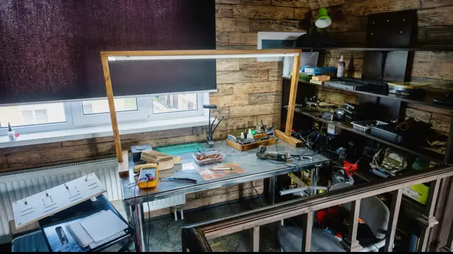
Рабочее место мастера у окна · мастерская
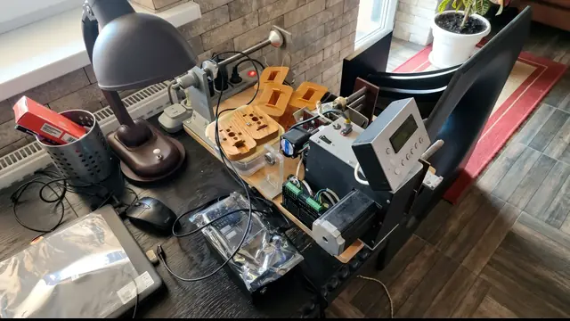
Намоточный станок на столе · мастерская
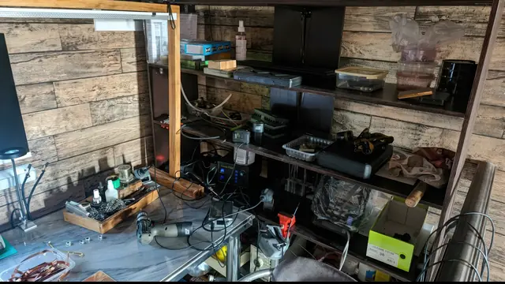
Стеллаж с приборами и материалами вдоль кирпичной стены, на переднем плане коробки с деталями · мастерская
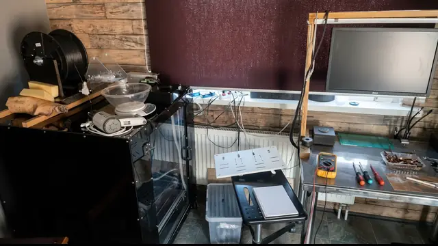
Угол мастерской · мастерская

Намоточный станок с цифровым счётчиком витков, рядом деревянные каркасы и настольная лампа · мастерская
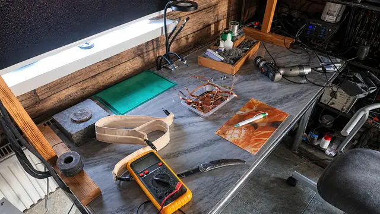
Стол с мультиметром, зелёным ковриком и заготовками обмоток из ленты · мастерская
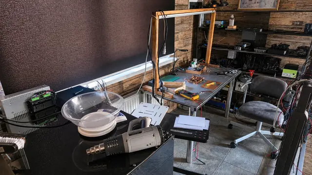
Мастерская с общего плана · мастерская
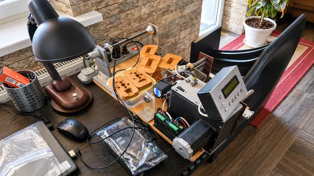
Намоточный станок с дисплеем и инструмент на тёмном столе у окна · мастерская
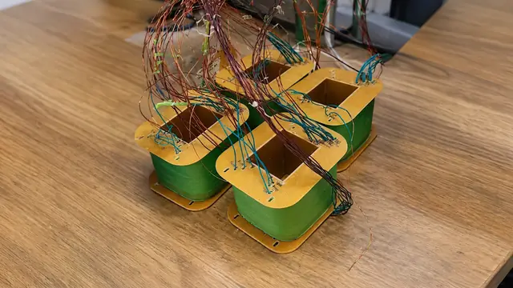
Каркасы · материалы
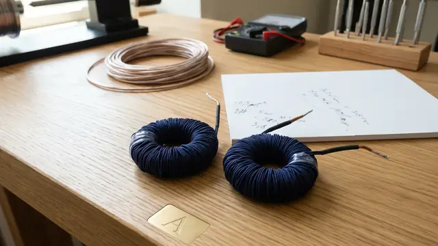
Кольцевые трансформаторы · силовые
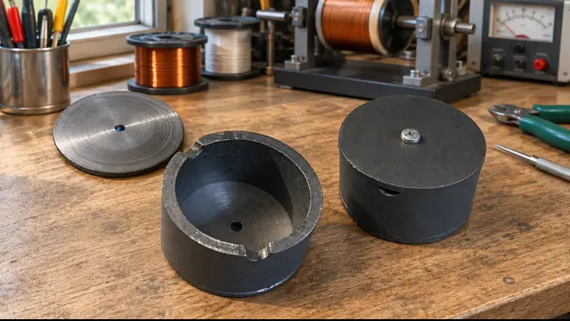
Сердечники · материалы
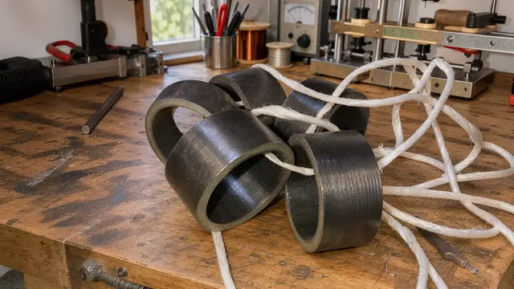
Кольца из стали · материалы

Катушка с выводами · процесс
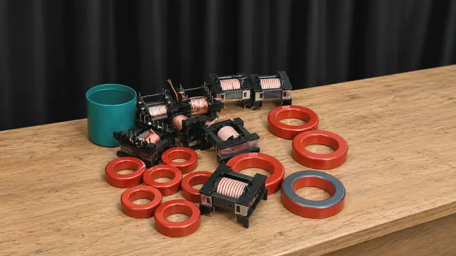
Сердечники и катушки · материалы
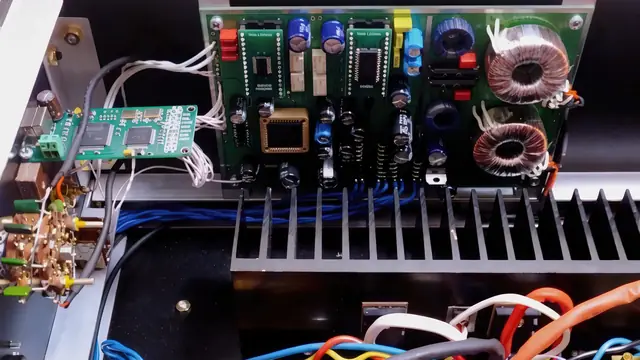
Транзисторный усилитель · кольцевые силовые
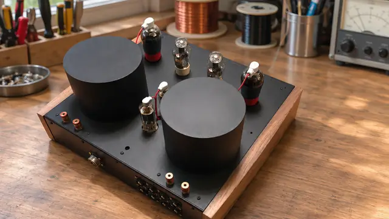
Ламповый усилитель · выходные трансформаторы

Однотактный усилитель на 300B · выходные
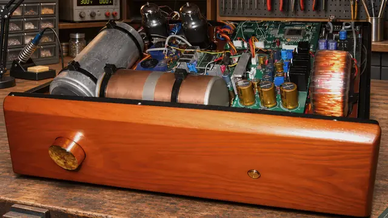
Ламповый усилитель · открытый монтаж
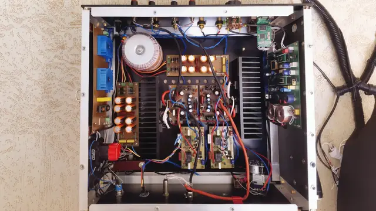
Транзисторный усилитель · дроссель
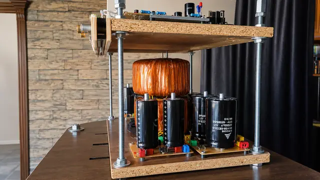
Блок питания · обмотка и фильтр
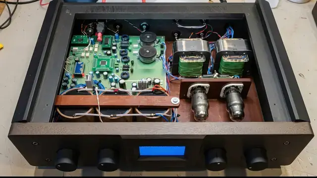
Усилитель заказчика · два трансформатора
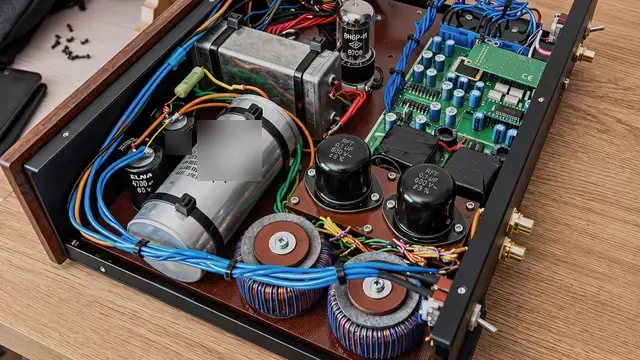
Монтаж усилителя · силовой и выходные

Усилитель в деревянном корпусе
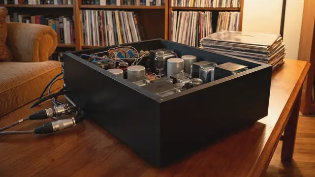
Готовое устройство в корпусе
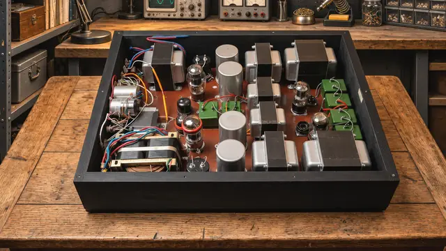
Открытый корпус · трансформаторы питания

Ламповый усилитель · выходные трансформаторы
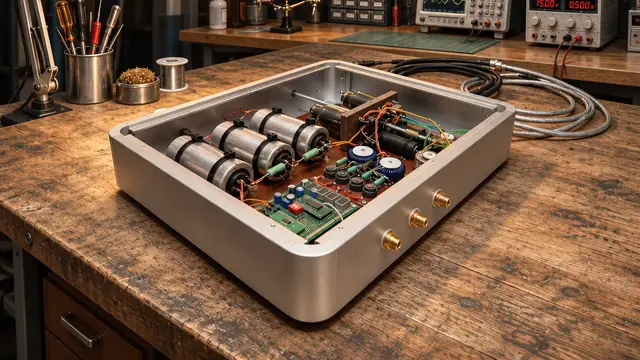
Усилитель в алюминиевом корпусе
- [фото — уточнить у владельца: выходной трансформатор крупным планом, без схемы намотки]
- [фото — уточнить у владельца: анодно-накальный трансформатор]
- [фото — уточнить у владельца: дроссель фильтра]
- [фото — уточнить у владельца: анодный дроссель]
- [фото — уточнить у владельца: выходной трансформатор ЦАП]
- [фото — уточнить у владельца: трансформаторный регулятор громкости / предусилитель]
- [фото — уточнить у владельца: трансформатор для транзисторного усилителя]